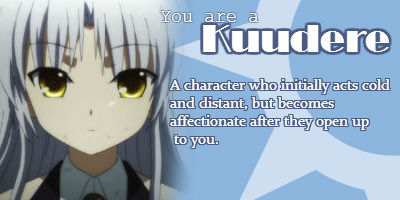

Kara's Dewey Decimal Section:
119 Number & quantity
Kara = 1181 = 118+1 = 119
Class:
100 Philosophy & Psychology
Contains:
Books on metaphysics, logic, ethics and philosophy.
What it says about you:
You're a careful thinker, but your life can be complicated and hard for others to understand at times. You try to explain things and strive to express yourself.
Find your Dewey Decimal Section at Spacefem.com
119 Number & quantity
Kara = 1181 = 118+1 = 119
Class:
100 Philosophy & Psychology
Contains:
Books on metaphysics, logic, ethics and philosophy.
What it says about you:
You're a careful thinker, but your life can be complicated and hard for others to understand at times. You try to explain things and strive to express yourself.
I am 150 centimeters tall.
This makes me taller than 0.1% of men and 2.8% of women.
|||||||||||||||||||||||||||||||||||||||||||||||
spacefem.com/quizzes/tall/
|||||||||||||||||||||||||||||||||||||||||||||||
spacefem.com/quizzes/tall/
#5F9EA0 |
Your dominant hues are green and blue. You're smart and you know it, and want to use your power to help people and relate to others. Even though you tend to battle with yourself, you solve other people's conflicts well. Your saturation level is lower than average - You don't stress out over things and don't understand people who do. Finishing projects may sometimes be a challenge, but you schedule time as you see fit and the important things all happen in the end, even if not everyone sees your grand master plan. Your outlook on life can be bright or dark, depending on the situation. You are flexible and see things objectively. |
